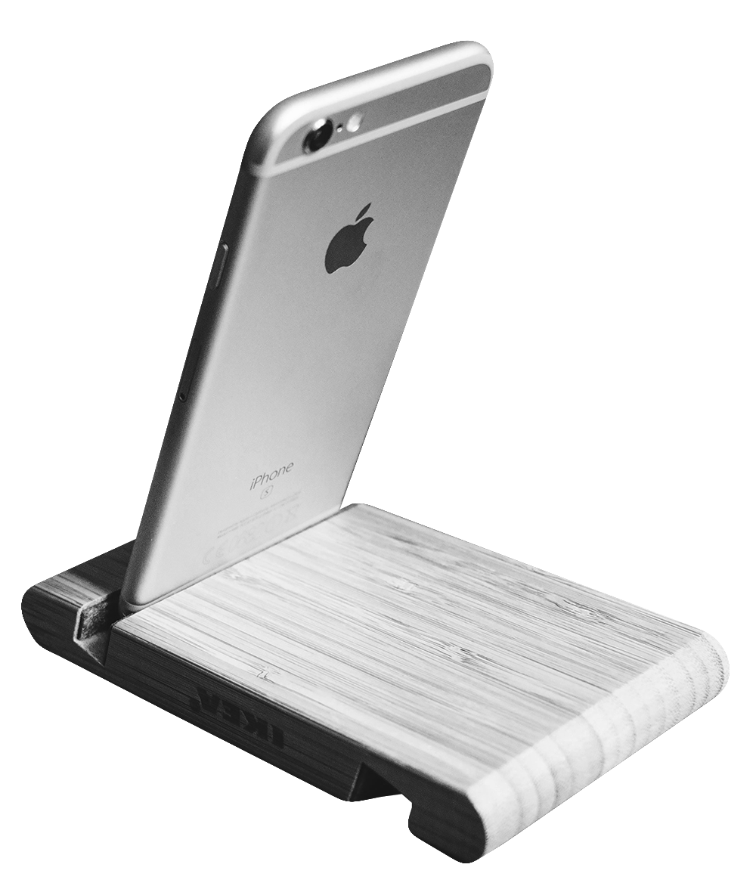
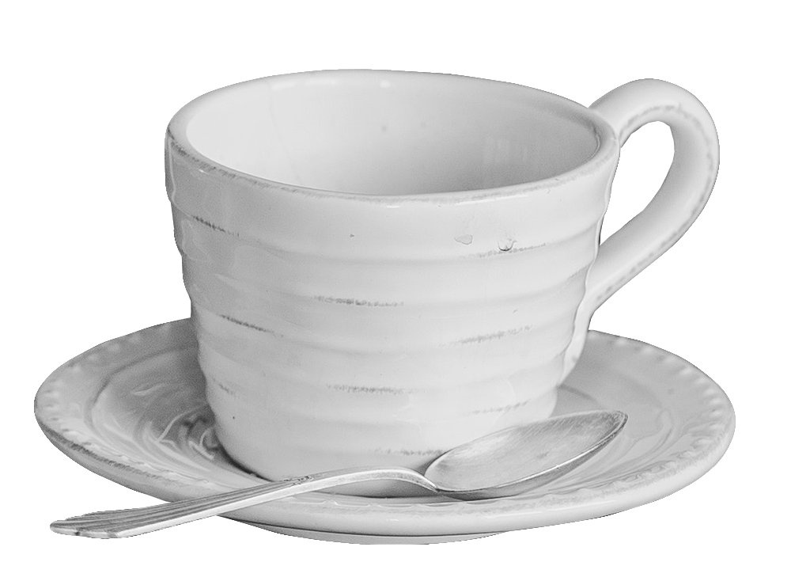
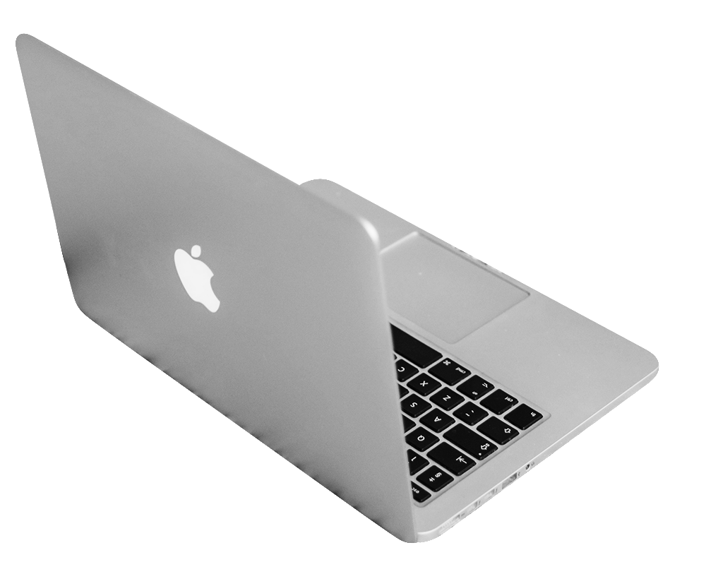
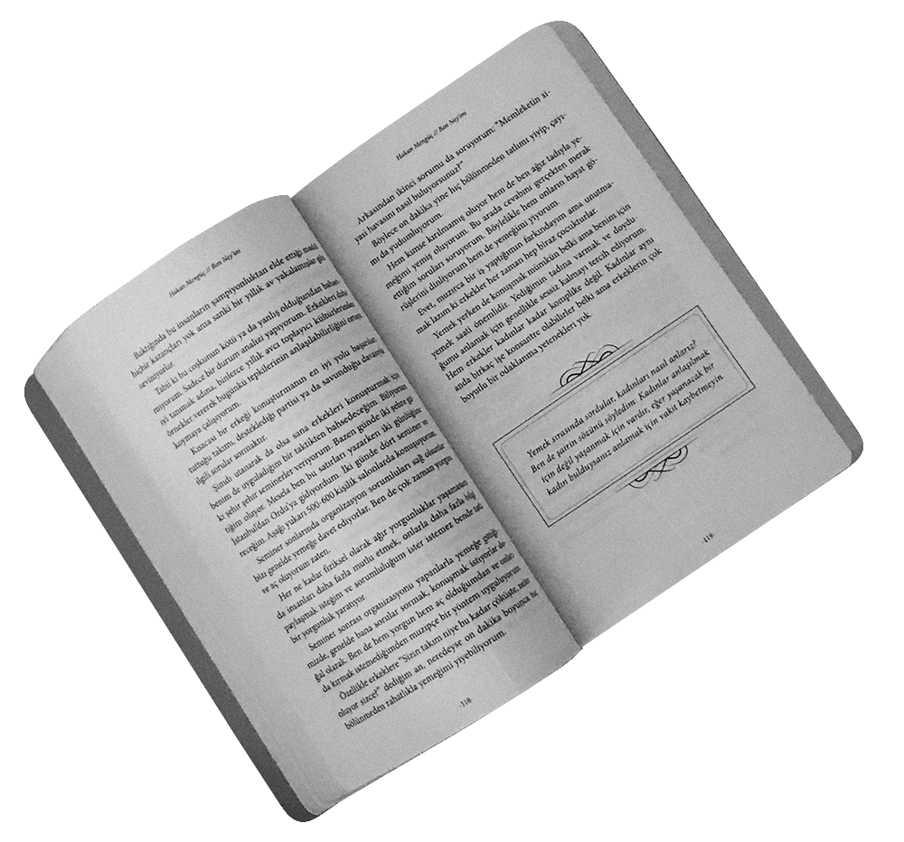
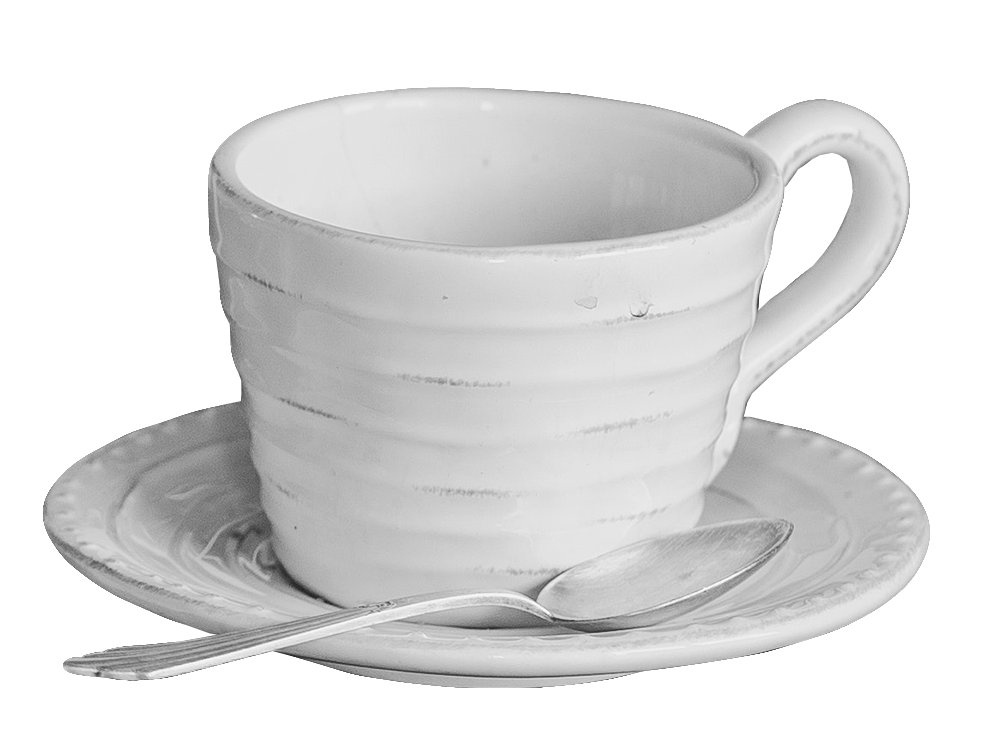
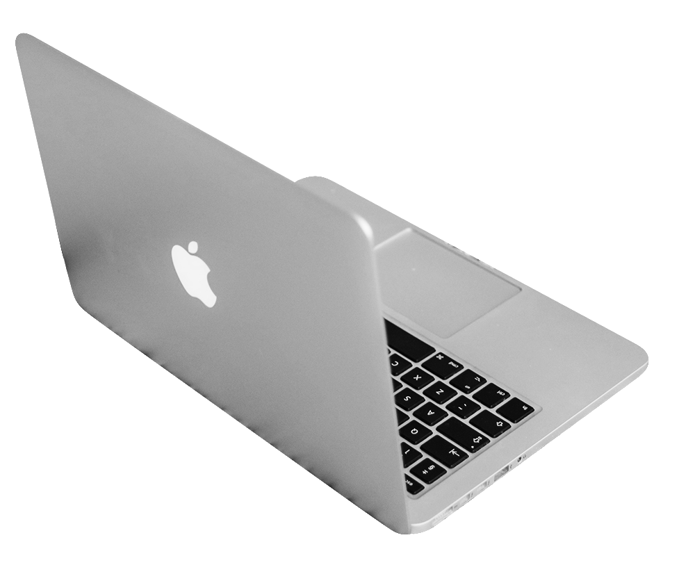
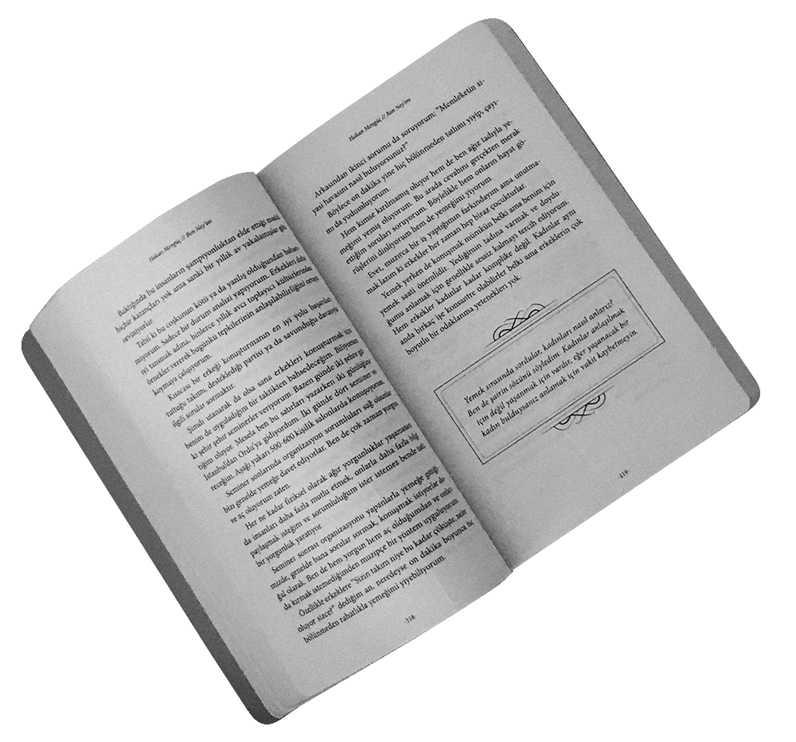

ИВАНОВСКИЙ
ГОСУДАРСТВЕННЫЙ
УНИВЕРСИТЕТ
2021 STUDENЬ
К ТРЕТЬЕМУ
#
ИЛИ НЕТ?
ЕКАТЕРИНА РЫБАНОВА
/ 27.10.2021
ЗАХОДУ
 





С 25 ОКТЯБРЯ В 2021 ГОДУ
Вновь началось дистанционное обучение… Какое уже по счету? Второе?
Третье? Сбиться со счету в таких условиях несложно, как, собственно, и
затонуть в середине недели, спутав четверг и вторник – не раз и не
одним человеком твердилось, что уровень качества знаний снижается
из-за такого формата. Но сейчас-то все уже должны привыкнуть?
ПОЛИНА, студентка Российскго экономическго
университета имени Г. В. Плеханова:
«Дистант у нас в принципе устроен
комфортно. Мы занимаемся в Google Meet (эта
платформа оказалась наилучшим решением
для удалённой учебы), и преподаватели нам
объясняют тему так же, как это было бы в
аудитории. Вот этого очень не хватало на
дистанте в школе. Всегда спрашивают, есть ли
у нас вопросы, успеваем ли записывать.
Но значительный минус дистанта в парах-практики математики.
Записывать математику под диктовку для моего мозга достаточно
тяжеловато, наглядно информация подобного рода мне запоминается
гораздо лучше. Хорошо, конечно, у нас преподавательница довольно
понимающая – не строго спрашивает именно на дистанте»
НАДЕЖДА, студентка Ивановского государственного университета:
«В целом, я могу сказать, что справляюсь с дистанционкой, потому что
предметы идут в соответствии с расписанием. Но в школе это было
организовано лучше, так как в вузе у нас могут переставить пары на
четыре, когда их официально не должно быть. Это немного сбивает с
толку, но в целом я справляюсь. Это не сложно»
«Я думаю, что справляюсь с организацией
дистанционного обучения. Единственное,
что я заметила – у меня начал меняться
режим. Например, я начала дольше сидеть
за уроками, я могу сидеть до трех. Если я
раньше прям старалась до часу ложиться, то
сейчас… Встаю я, соответственно, позже».
ВАЛЕРИЯ МОЛОКОВА, студентка Ивановского
государственного университета:
АНТОНИНА, студентка Ивановского колледжа сферы услуг:
«Дистанционное обучение невыносимо: не понимаешь материал и не
вывозишь. У меня скоро лабораторная, и я должна сама купить продукты
и сфотографировать все им всё, доказав, что не из интернета. А на
первой дистанционке у меня вообще экзамены были. Время вечно
непонятное. То рано, то поздно. Не разберёшь».
АНАСТАСИЯ, студентка Ивановского государственного
энергетического университета имени В. И. Ленина:
Печатные лекции мне очень сложно
воспринимать, материала много, он ужасно
сложный, и без комментариев преподавателей,
их упрощенной формулировки и различных
вспомогательных изображений понимать
материал фактически невозможно.
При очном обучении я всегда знаю, что на
каждый день мне нужно успеть подготовить
определенные задания, а на дистанте такого
нет, четкого расписания нет, желания что-
либо делать, кстати, тоже нет, так что мой
КПД на дистанте стремится к нулю.
Присутствует постоянное ощущение,
что времени очень много, и ты все
успеешь - но по итогу мотивации
учиться никакой нет, поэтому после
первого же выполненного задания
(выполненного, кстати, ровно к
дедлайну) ты успокаиваешься и идешь
дальше переживать, что ничего не
делаешь сидя на диване.
Преподаватели в свою очередь тоже не горят желанием с нами
заниматься, с некоторыми очень сложно выйти на контакт, кто-то дал
нам полную свободу, так как их занятия (в частности, лабораторные
работы, коих у нас очень много) все равно провести невозможно в таком
формате. Большая проблема и в том, что все необходимое для обучения
оборудование есть исключительно в вузе, и если обычно можно придти
в аудиторию и позаниматься, то дома такой возможности мы не имеем».
ВАЛЕРИЯ, студентка Ивановского государственного
энергетического университета имени В. И. Ленина:
«Я не всегда справляюсь с организацией
дистанционного обучения. В дистанционном
обучении есть свои минусы. В домашних условиях
сложно сконцентрироваться, что мешает усвоению
информации во время занятий в Зуме. Неполный
контакт с преподавателями. Да, всегда есть
возможность обратиться к ним с вопросами по
почте, однако вживую легче донести свои мысли.
Стресс всегда связан у меня с ухудшением
физического и ментального здоровья. Наверняка,
для многих это мука сидеть постоянно дома, но
меня это устраивает. Нет необходимости в
поездках до университета и обратно, отсиживаться
на перерывах и т.п. Это важно, ведь обычно домой
я приезжаю полностью вымотанной.
ИВАН, студент Ивановского государственного
энергетического университета имени В. И. Ленина:
По некоторым - в довольно сильную. Так что… в
целом да, справляюсь, но не всегда получается
грамотно распределить время и в целом, я
думаю, если представить ситуацию, в которой
все предметы мне бы нравились, я все бы все
любил, то, наверное, тогда все получалось бы
вообще замечательно. Но в целом терпимо».
ДАРЬЯ, студентка Ивановского государственного университета:
И плюсом, у меня есть дикая боязнь
камеры, у меня это вызывает
большой дискомфорт, поэтому чаще
всего, если я посещаю занятия, сижу
с выключенными микрофоном и
камерой. Также мне намного проще
воспринимать информацию, когда я
вижу человека в живую.
Когда вижу человека в реальной жизни, наблюдаю за его эмоциями,
движениями, заинтересованностью к тому, что он говорит, как будто
полностью погружаюсь в атмосферу, которую он создаёт. И, по-моему,
так лучше запоминается и воспринимается».
«Справляюсь ли я с организацией дистанционного обучения? Ну, в целом,
да, долгов нет. По крайне мере пока. Но насколько хорошо справляюсь –
большой вопрос, потому что все сильно зависит от предмета и от его
сложности, и даже, наверное, в первую очередь, от того, насколько он мне
нравится. Мне нравится довольно мало предметов – по остальным же, к
сожалению, иногда скатываюсь в прокрастинацию.
«К сожалению, дистанционное обучение для меня - мука, потому что я
сильно себя распускаю, разрешаю себе не ходить на занятия. Я не
воспринимаю всерьёз дистанционное обучение, для меня это как
сходить в кино (посидел, посмотрел, возможно, что-то вынес для себя).
ПОЛУЧИЛОСЬ ЛИ У СТУДЕНТОВ САМООРГАНИЗОВАТЬ ДИСТАНТ?
И как студент технического вуза могу сказать, что такой формат обучения
не позволяет на практике прочувствовать работ со специальным
оборудованием. Но все недостатки не так важны для меня, так как
нагрузка не поменялась или, может, она даже немного уменьшилась, всё
зависит от преподавателя. В таких условиях я испытываю меньше стресса
из-за нехватки времени или ежедневного общения с людьми.
«Мне кажется, что я скорее не справляюсь. Да,
иногда есть расписание занятий по Зуму, но чаще
нам просто скидывают материал к прочтению и
задания, которые нам нужно выполнить. Из-за
отсутствия какого-либо ритма обучения я
постоянно откладываю все на потом, до дедлайна,
если таковой вообще поставлен.
ИВАНОВСКИЙ
ГОСУДАРСТВЕННЫЙ
УНИВЕРСИТЕТ
2021 STUDENЬ
ЕКАТЕРИНА РЫБАНОВА
/ 27.10.2021
ИСТОЧНИК КАРТИНОК: